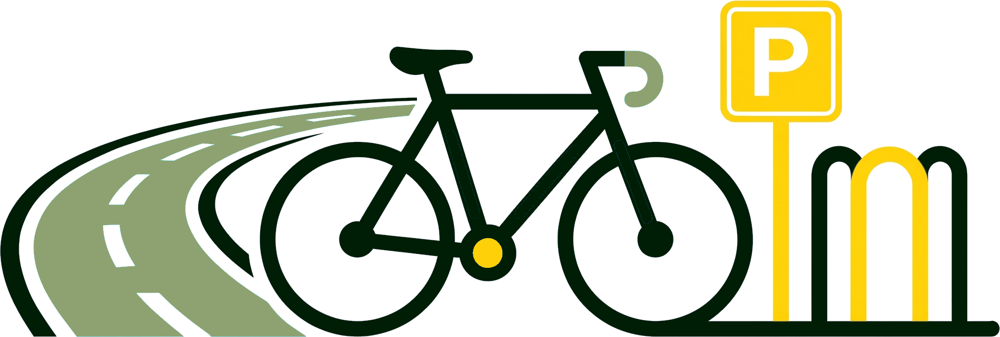
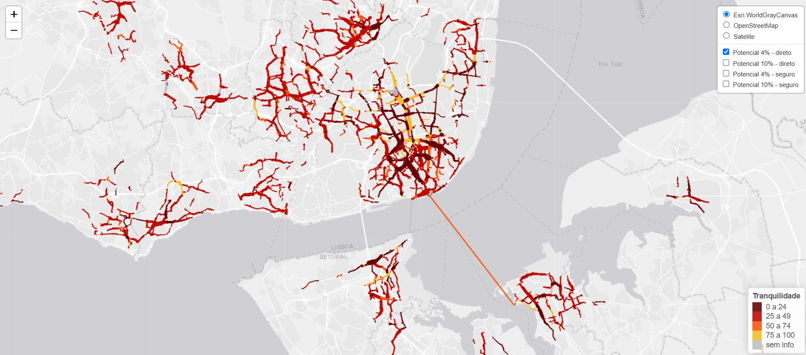
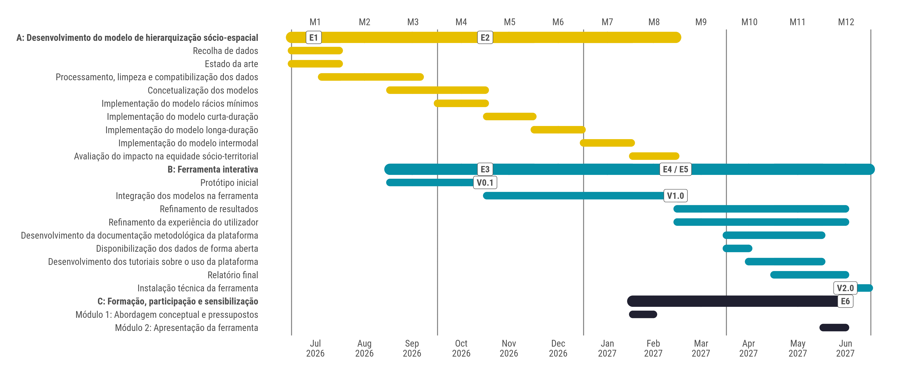
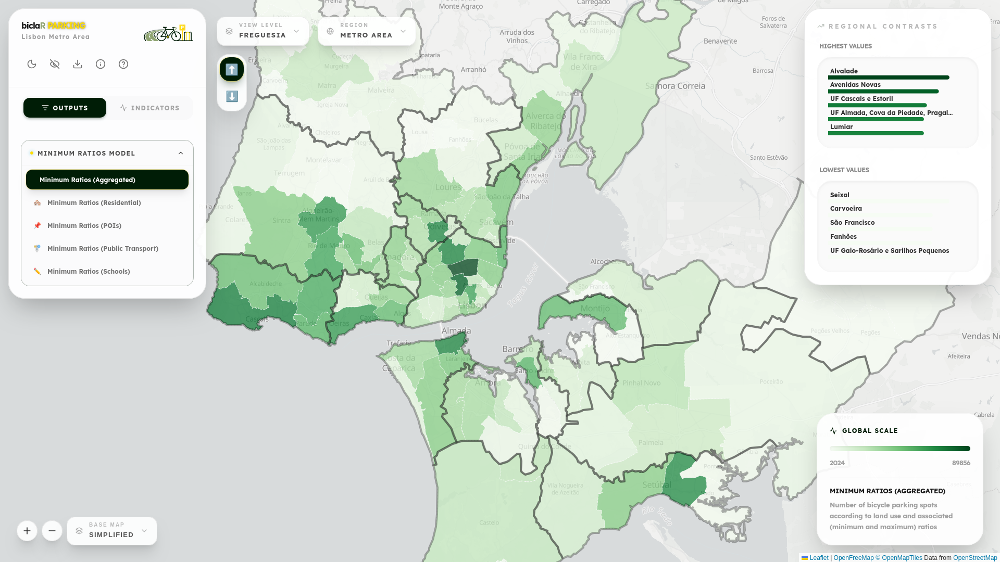

Miguel Alvelos · Gonçalo F. Matos · Francisco Valério · Rosa Félix · Filipe Moura

biclaR (Félix et al. 2022): Tool to help plan AML’s cycling network, based on different trip patterns and modal share objectives.
biclaR Parking: Extension to identify, dimension, and prioritize bicycle parking infrastructure across the AML.

📍 Status Report: E2 (Model Conceptualization & Data Systematization) + E3 / V0.1 (Initial Interactive Prototype with Minimum Ratios Model & base layers)
odjitter) weighted by Global Building Atlas (GBA) building volumes to match short cycling trip granularity.| Dimension | Sources | Details |
|---|---|---|
| Cycling & Road Network | OSM + TML + Municipalities | Validated road/cycling network (AML + Cascais, Lisboa, Oeiras, Seixal, Sintra) classified by segregation level |
| Existing Bike Parking | OSM + MUBi + CML | Cidade Ciclável collaborative map + Lisbon municipal database + OSM |
| Points of Interest (POIs) | OSM (10 cat.) + DGEEC (4 cat.) | Retail, services, health, culture, leisure, sports, offices + student counts across 4 education levels |
| Public Transport (PT) | TML Go (GTFS) + Ticketing | Aggregated AML GTFS (tidytransit, GTFShift), interface hierarchy & daily validations per stop/hub |
| Bike Thefts | PSP & GNR | 5-year aggregated reported bicycle thefts (urban & rural jurisdictions) |
| Micromobility | GBFS (Bird, Lime, Bolt, Gira) | High-frequency (1-min) parked vehicle locations across Lisboa, Almada, Cascais & Oeiras |
Daily bicycle parking dimensioning across 4 complementary models:
📏 3.A. Minimum Ratios Model
Baseline parking spots required by municipal regulations (Almada, Seixal) and European literature according to land use (residential, POIs, PT stations, schools).
☀️ 3.B. Daytime Model (Short to Medium Term)
Up to 2h (Sheffield stands) and 2–8h (enhanced security) for daytime work/study & utilitarian trips.
🌙 3.C. Nighttime Model (Long Term)
Overnight parking (>8h) in residential areas for return-home trips.
🚆 3.D. Intermodal Model
First & last mile cycling combined with PT: bike on board (ferries/trains) or parked at higher-hierarchy PT interfaces.
\[N_c = \sum_i \alpha_i X_i\]
r5r): Jittered IMOB trips routed on direct & safe profiles with slope (\(\le 5\text{ km}\) conventional, \(\le 10\text{ km}\) e-bike)Available at:
🔗 ushift.pt/apps/biclar
Already available in V0.1:

Alvelos, Matos, Valério, Félix, Moura — biclaR Parking (Deliverable E2 & Prototype V0.1)